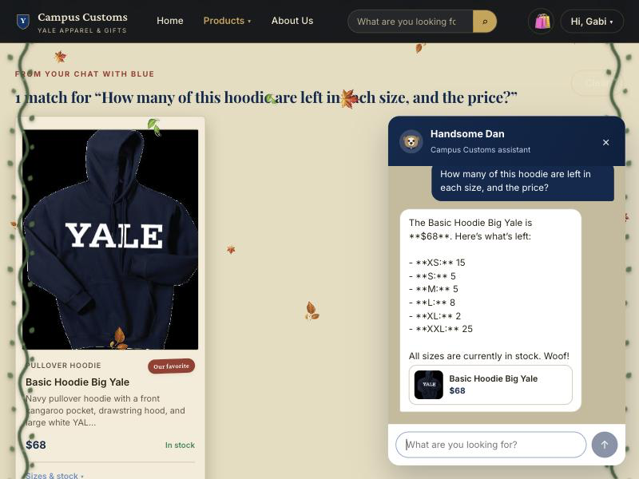
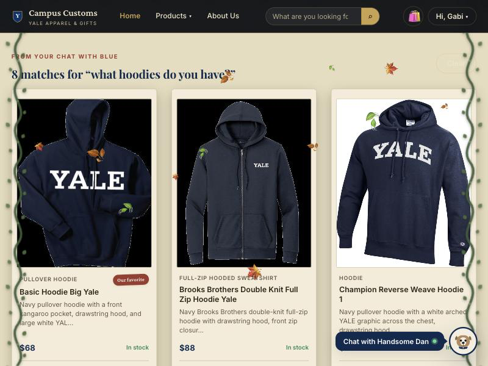
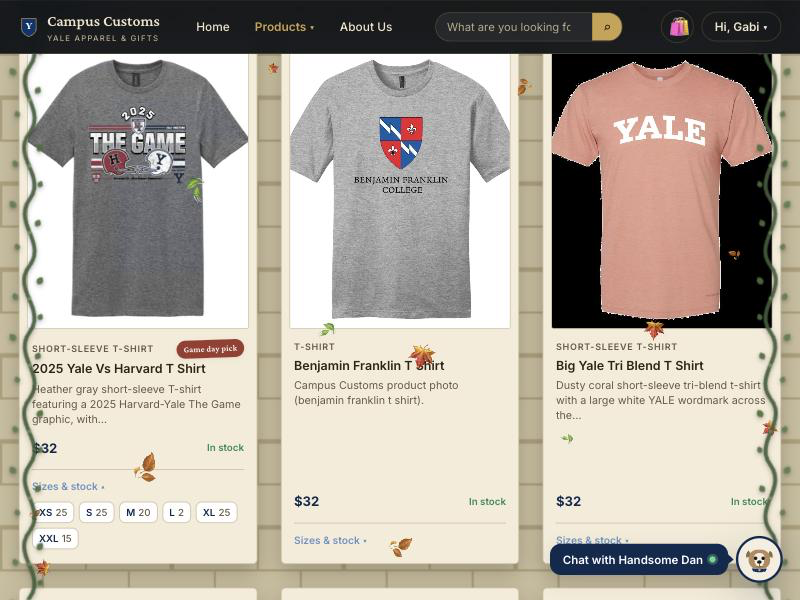

:5173,
FastAPI + PydanticAI backend on :8000). Each check below has a
heading, the screenshot captured from the live site, and one or two sentences on
what it proves.
Chatbot reports real stock and price from the database

What it proves: Asked how many of the Basic Hoodie Big Yale
are left in each size, Handsome Dan answers $68 with the exact
per-size counts (XS 15, S 5, M 5, L 8, XL 2, XXL 25). These come straight from
the catalogue and inventory tables via the agent's
tools — the numbers match the database, so the bot isn't inventing stock or
price.
Category question renders matching product cards on the page

What it proves: Asking the chatbot “what hoodies do you have?” returns structured product matches that the website renders as clickable product cards (“8 matches”, e.g. Basic Hoodie $68, Brooks Brothers $88, Champion Reverse Weave). The agent's results dynamically update the storefront, and each card opens the item's detail page.
Per-tile “Sizes & stock” dropdown (check availability before clicking in)

What it proves: One of the Problem 9 usability improvements — each product tile has a “Sizes & stock” dropdown that expands in place to show live per-size quantities (XS 25, S 25, M 20, L 2, XL 25, XXL 15), so a shopper can confirm their size is available without opening the full product page.